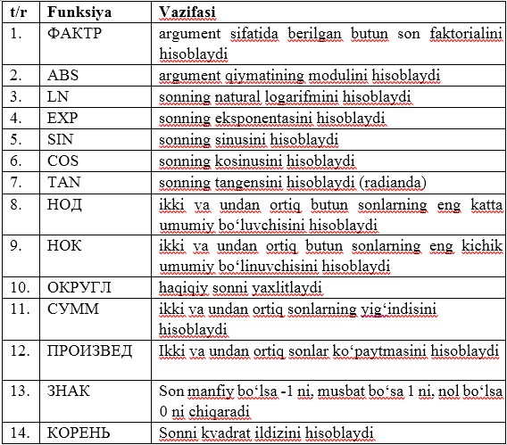
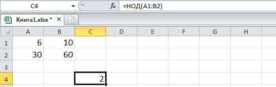
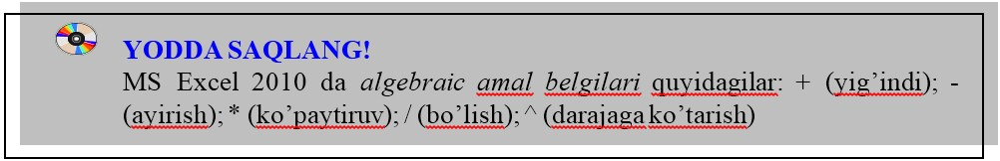

6-DARS. MS EXCELNING FUNKSIYALAR KUTUBXONASI
Excelda tayyorlanadigan ma’lumotli jadvallar matn yoki sonlar bilan to‘ldirishligini yuqorida aytib o‘tdik. Ba’zan kataklardagi mashg‘ulotlar ustida ayrim hisoblashlarni bajarish zaruriyati tug‘iladi, bunday vaziyatda formulalardan foydalaniladi.
Buning uchun MS Excel 2010 tasmasidagi Формулы bo‘limiga murojaat qilinadi. Ushbu bo‘limda qiymatlar, ifodalar va kataklar ustida amallar bajarishga mo‘ljallangan funksiyalar kutubxonasi jamlangan. Kutubxonadagi turli vazifalarni bajarishga mo‘ljallangan funksiyalarning ba’zi birlari bilan tanishib chiqamiz.
Matematik funksiyalar

1-mashq. Berilgan 6,10, 30, 60 sonlarning eng katta umumiy bo‘luvchisini hisoblang.
Bajarish:
A1 katakka 6 sonini, B1 katakka 10 sonini, A2 katakka 30 sonini, B2 katakka 60 sonini kiritamiz;
C4 katakka quyidagi formulani kiritamiz: =НОД(A1:B2)
Enter tugmasi bosiladi.Natijada quyidagi oyna hosil bo‘ladi:



1. СУММПРОИЗ funksiyasidan foydalanib (5;10), (15;20), (25;30) sonlar juftliklari ko‘paytmalari yig‘indisini hisoblang.
2. Berilgan -99, -23. -6, 0, 10, 56, 77, 89, 123, 345, 678, 2345 sonlarning ichidan eng katta va eng kichigining yig‘indisi va ko‘paytmasini hisoblang.
3. -7,8; -9,67865; -4,6; -3,8; 7,8 sonlarning ko‘paytmasini hisoblang va ОКРУГЛ funksiyasi yordamida 2 ta raqamgacha yaxlitlang.

1. 1,2,3,4,5,6,8,9 sonlarning kvadrat ildizlari yig‘indisini hisoblang.
2. 15, 20, 45 62, 94, 112 sonlarning eng kichik umumiy bo‘linuvchisini toping.
3. 4,10 sonini faktorialini hisoblang.